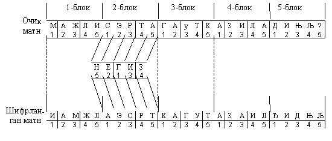
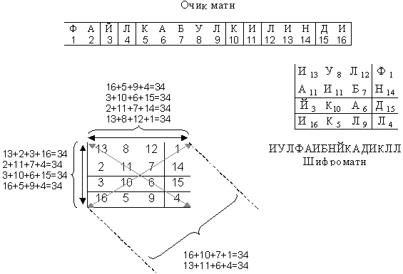

Оддий ўрин алмаштириш шифрлаш усули
Одатда, очиқ матн иҳтиёрий узунликка эга бўлади. Гохида унинг етарли даражада катта ҳажмга эга бўлишини эътиборга олиб, у ўзгармас узунликдаги кичик блокларга бўлинади. Бу бўлинган блок матнлари бир-бирига боғлиқ булмаган холда алохида-алохида шифрланади.
Белгилар кетма-кетлиги тартибини ўзгартириш йўли билан очиқ матн мазмунини йўқотишга қаратилган ўрин алмаштириш шифрларидан фойдаланишда очиқ матн белгилари берилган блок чегарасида бир нечта қоида (калит) бўйича алмаштирилади. Бунинг натижасида уларнинг жойлашиш тартиби ва ахборотнинг мазмуни ўзгаради.
Қараладиган ушбу ўрин алмаштириш шифрлаш методлари ўз навбатида оддий ва мураккаб ўрин алмаштириш каби турларга бўлиниб улар бир-биридан фарқланади.
Оддий ўрин алмаштириш шифрлари танланган ўрин алмаштириш калити(қоидаси)га мос ҳолда матндаги белгилар гурухини қайта тартиблайди.
Бунинг учун оддий шифрлаш процедура (калит)ларини берувчи махсус жадваллардан фойдаланилади. Унга кўра очиқ матндаги белгилар ўрнини алмаштириш амалга оширилади. Бунда калит сифатида жадвал ўлчамлари ҳамда алмаштириш ёки жадвалнинг бошқа махсус хусусиятларини берувчи иборалар хизмат килади.
Оддий ўрин алмаштириш шифрига мисол куйидаги жадвалда келтирилган.
|
Б |
И |
А |
Т |
У |
А |
|
А |
Р |
К |
Е |
Ч |
М |
|
Х |
Н |
У |
Т |
Р |
И |
|
О |
И |
Л |
Д |
А |
З |
|
Д |
Ф |
Ь |
А |
Т |
Ъ |
Жадвалдан кўриниб турибдики, “Баходирни факультетда учратамиз” очиқ матнни шифрлаш учун:
уни 5х6 ўлчамдаги жадвалга ёзиб оламиз. Очиқ матн бўш жой қолдирмасдан устунлар бўйича ёзилади.
агарда охирги устун тўлмай қолса, уни иҳтиёрий ҳарф ёки белги билан тўлдириш мумкин.
шифрланган матнни олиш учун берилган матн қатор бўйича чапдан ўнгга қараб ўкилади ва гурухлаб ёзилади.
шифрланган матнни аслига тиклаш учун жадвалнинг улчами, мос холда катор ва устунлар сонидан иборат калитни билиш етарли.
Амалда кўпрок ишлатиладиган, юқоридаги методга ўхшаш шифрлашнинг яна бир методини кўриб ўтамиз. У шу билан фарқланадики,
жадвал устун ва сатрларининг ўрни калит сўз бўйича алмаштирилади. Ушбу ҳолда ибора ёки жадвал қаторидаги сонлар гурухидан(тўпламидан) калит сифатида фойдаланилади.
шифрланувчи матн кетма-кет каторлар бўйича ёзилади ва белгиллар кайтарилмайди.
калитни эслаб қолишни осонлаштириш учун калит сўздан фойдаланилади. Унинг ҳарфлари алфавитдаги турган ўрнига кўра номерланади ва у ўрин алмаштириш қоидасини беради.
Масалан, “Мажлис эртага утказилади” очиқ матни шифрлаш талаб қилинсин.
Очиқ матнни шифрлаш учун:
сўзлар орасига бўш жой қолдирмасдан ёзиб оламиз ва 52134 номерли калит танлаймиз.
ушбу 5 та рақамдан ташкил топган калитга кўра, очиқ матнни 5 та ҳарфдан ташкил топадиган блокларга ажратамиз.
сўнг бизда 4 та 5 ҳарфдан иборат тўлиқ блок ва 1 та 2 ҳарфдан иборат блок ҳосил бўлади.
бундай холатда охирги ҳарфлар гурухи, блок тулганча иҳтиёрий белгилар билан тўлдирилади. Ушбу мисолда 3 та ҳарф етишмайди. Шунинг учун иҳтиёрий у, к, г ҳарфлари билан блокни тўлдирамиз.

кейин 52134 калитдан фойдаланиб, берилган очиқ матндаги ҳарфларнинг ўрни алмаштирилади.
калитнинг биринчи рақами 5 га тенг. Бу шуни кўрсатадики, янги хосил бўлаётган шифрланган блокнинг биринчи хонасига очиқ матн биринчи блокидан 5 рақамига мос ҳарф ёзилади. Калитнинг иккинчи рақами 2 га тенг демак, шифрланган матнинг иккинчи ҳарфи очиқ матн блокидаги иккинчи ҳарф А бўлади.
Шифрлаш шу тарзда кетма-кет давом этади.
Нихоят, ҳамма блокларда ўрин алмаштириш ўтказилгандан сўнг, шифрланган матнни оламиз. Уни ўкиб, дастлабки матндан хеч қандай маъно қолмаганлигига ишонч хосил қиламиз.
Калитни эслаб колишни осонлаштириш максадида калит сўз ишлатилади. Берилган холда бу суз “НЕГИЗ”. Унда калитдаги 1 рақами Г ҳарфига мос, яъни бу сузда келаётган ҳарфлар ичида алфавитда биринчи ҳарф хисобланади. 2 рақамига эса Е ҳарфи мос келади ва хоказо.
Ўрта асрларда мавжуд “Сирли квадратлар”дан фойдаланган ўолда оддий ўрин алмаштириш шифрлаш методларидан фойдаланишган.
“Сирли квадратлар” деб, ҳамма томонлари тенг, 1 дан бошлаб натурал сонлар билан тўлдирилган жадвалга айтилади. Тўлдирилган сонлар қўшилганда устун бўйича ҳам, қатор бўйича ҳам бир хил сон ҳосил бўлиши керак (келтирилган мисолда бу сон 34).
Масалан, “ФАЙЛ КАБУЛ КИЛИНДИ” очиқ матни берилган.

“Сирли квадрат”ни тўлдиришда берилган матндаги номерланган ҳарфлар жадвалга кўчирилади. Масалан, 1 рақами матндаги Ф билан, 10 рақами К билан ва ҳоказо алмаштирилади. Очиқ матн жадвалга кўчирилгандан сўнг, жадвал қатор бўйича ўқилади ва натижада ҳарф ўринлари алмашган шифрматн хосил бўлади.